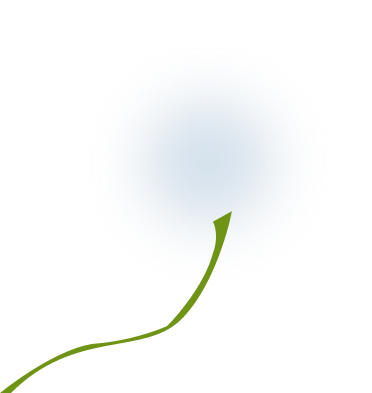

Verisimilitude Studio is founded by former Meta designers Michelle and Jenna. We are an independent practice built on a shared foundation of authenticity and intentionality. We exist to craft work that reflects our values and challenges the conventional.
Together, they bring 20 years of combined industry experience across startups and Big Tech. They work with founders and teams that value a human touch to build 0-1 or scale to a global audience.
Our design process centers on observing nature, making things by hand, and holding open conversations with collaborators. Then, we identify simple and effective design solutions for you. Ultimately, AI does not replace our judgement, as we use it to simply execute on human-centered ideas.